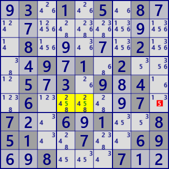

LockedCandidate
LockedCandidateには、2つのタイプがあります。
タイプ1
着目ブロックで数字Nの入るのが1行（または1列）のみのとき、行方向（列方向）のブロックの同じ行（列）では数字Nが候補から除外されます。

ブロックb5では、数字5が入るのはr6のみです。
従って、ブロックb6のr6c9では数字5は候補から除外されます。
.3.1.5.8...........8.....2...9.1.2...5.3.9.4..6.....7.7..6.1..851..7..69..8...7..
タイプ2
着目ブロックと行方向（列方向）で関連するブロックに着目します。 数字Nの入るのが2行（または2）のとき、 着目ブロックでは行方向（列方向）の同じ2行（2列）では数字Nが候補から除外される。

数字7に着目すると、ブロックb1とb2では2・3行目にあります。
従って、ブロックb3では1行目に限定され、r2c8では数字7は候補から除外されます。
...3.9...3.......564.....89.........89..2..51..6.5.8..5.1...7.8.3.5.4.2.7..1.2..3